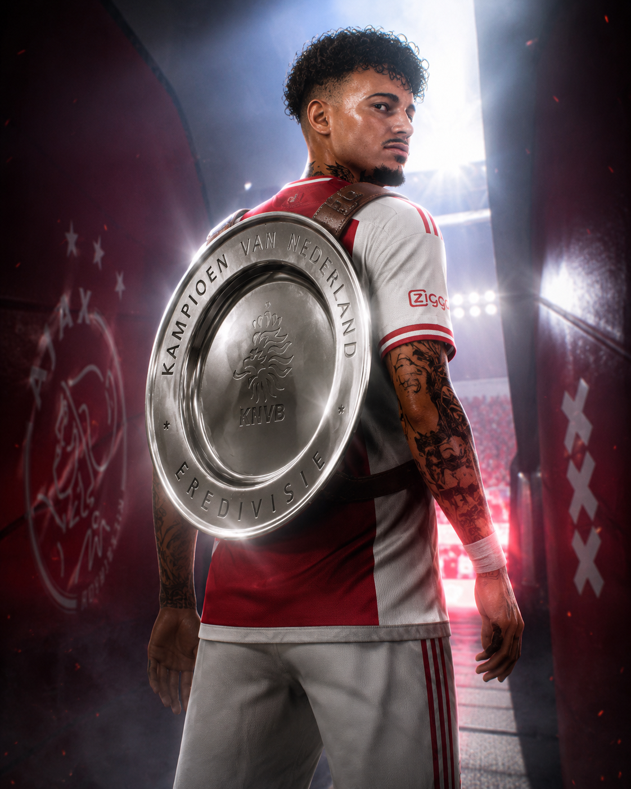
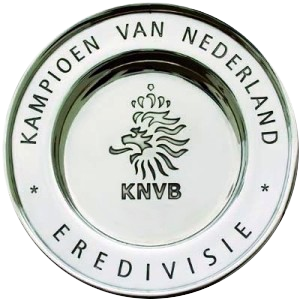
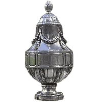
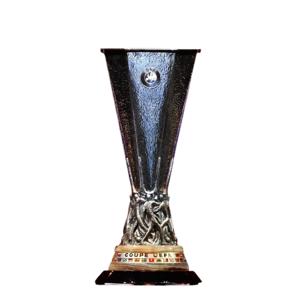
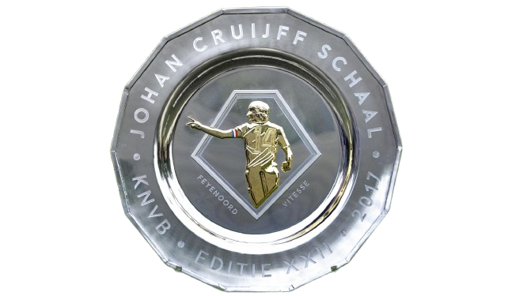
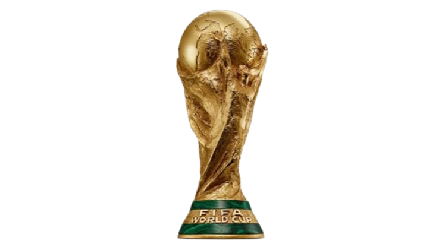
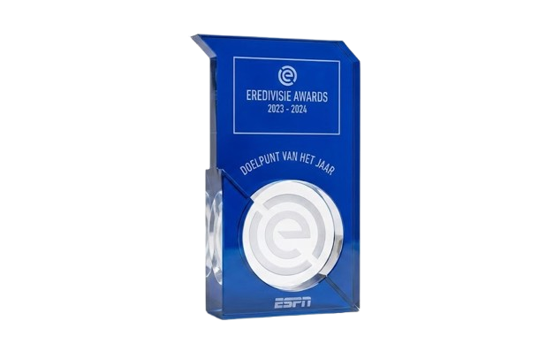
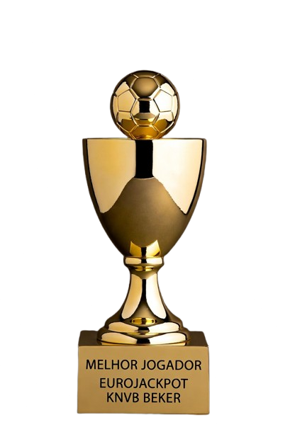

Jogos
351

Abrir InstagramDo Oriente Petrolero ao Ajax, da Eredivisie à Champions League. Bola de Ouro na prateleira e Copa do Mundo nas veias — Salazar escreveu uma história que ninguém previu e ninguém vai esquecer.











